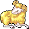
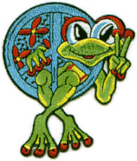
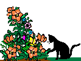
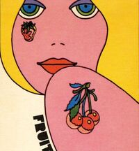
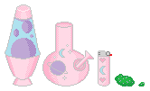

I dedicate this shrine to my wife whom I love more than life itself. This shrine is perpetually under construction, and will be, until the day when I am greeted by a timely end. My wife is an extremely talented artist, a wonderful cat mom, and the best partner I could ever ask for. Each little section in the shrine is dedicated to something about my wife or something she likes. She also (sometimes) helps pick out the images that inhabit it.
I ❤️🔥 My Wife

My wife is a Taurus and I am an Aries; we are two weeks apart in age. I'm not much for horoscope stuff, but I like how the aesthetics and common associations with our astrological signs complement one another. I think these little pixels are good representations of us. I am really sorry to say I did not document what website from which I retrieved these cute little images; send me an email if you know!
My wife has a very slight obsession with Garfield. I hope to eventually document all the goofy old Garfield merchandise she often receives as gifts. I like to buy her vintage Garfield stuff from antique stores. For now, here are the pictures she picked out of my "Garf" .gifs folder as her favorites:

The wife loves frogs. Here are her favorites from my /FROG bin:





My wife and I have three cats that we love and care for! My wife absolutely LOVES cats more than anything in the world, especially our three little idiots. We have adopted all our cats or taken them in as strays. We have a black Bombay cat who loves to raise hell despite her tiny stature, a janky (fat, adorable) mutt of a Nebulung whose favorite pasttime is watching Hell's Kitchen, and a beautiful Mainecoon with a big heart who wants nothing but food and to be pet by his mothers. Our cats are so special and empathetic; I don't know what we'd do without them. I hope to post some pictures of them here someday!
I asked my wife if she had anything to say for this section and she said, "Adopt a black cat. They never get adopted." Which is true and very sad. Despite popular myth painting black cats as a bad omen, they are one of the most fascinating and intelligent type of cats! Puritanical white men made that shit up as an excuse to hang "witches" who didn't agree with them and/or wanted rights, soooo... who was really right there?
My wife loves marijuana. She uses it for her chronic (pun intended) pain, and also just because she loves weed. I love to roll her joints for her! It is the only thing that actually fixes her constant physical pain, and it's legal where we live, so it's really nice that there isn't a risk associated with it anymore. It sucks that so many people don't have that privilege.

P.S. Did you find the secret 420 page? Try clicking something in the frame...
This is some other stuff my wife likes and also just some .gifs that she picked out (or I did) to represent her. Be jealous! She's so cool!
__________________________
/ Zzzzzzzzzzzzzzzzzzzzzz... >
\___________________________/

This is a virtual picnic for my wife and I.
She loves the garlic onion ramen from the local Asian grocer. I also love it, but I think it's f*cking nasty that she puts lime juice in hers.
